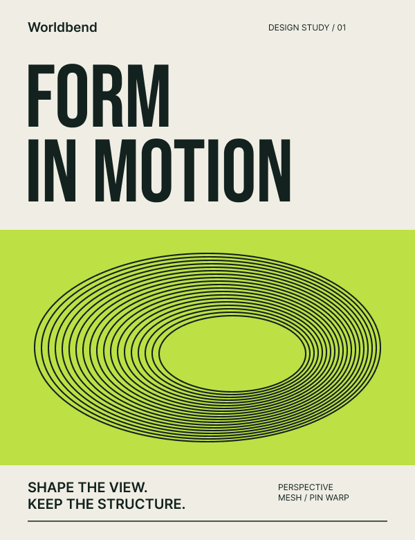
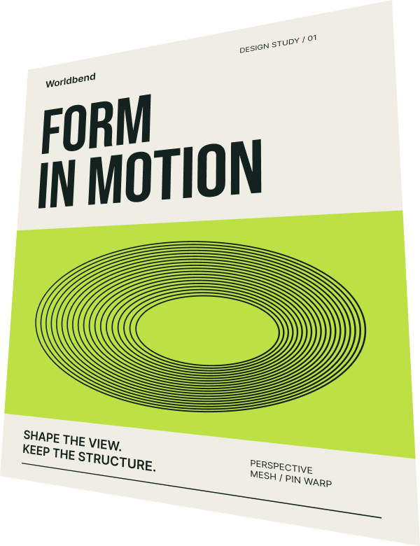

<!doctype html>
<html lang="en"><meta charset="utf-8"><title>Worldbend 0.6 Community cover</title>
<style>
*{box-sizing:border-box}html,body{margin:0;width:1920px;height:1080px;overflow:hidden;background:#f3f1e8;color:#142922;font-family:Arial,Helvetica,sans-serif}
main{position:relative;width:1920px;height:1080px;padding:78px 80px}
h1{margin:0;font-size:86px;letter-spacing:-5px;line-height:1;font-weight:700}
.heading{position:absolute;top:302px;left:80px;font-size:68px;line-height:1.12;letter-spacing:-3px;font-weight:700}
.footer{position:absolute;bottom:90px;left:80px;font-size:25px;line-height:1.6}
.free{display:inline-block;border:1px solid #142922;border-radius:30px;padding:8px 22px;margin-bottom:22px;font-size:20px;letter-spacing:1px}
figure{position:absolute;margin:0}figcaption{font-size:18px;letter-spacing:2px;font-weight:700;margin-bottom:24px}
img{display:block;width:100%;height:auto;box-shadow:0 28px 58px #14292216}
.source{left:735px;top:314px;width:360px}.result{left:1190px;top:132px;width:600px}
.result img{box-shadow:none}.version{position:absolute;right:80px;bottom:48px;font-size:18px;letter-spacing:1px}
</style>
<main><h1>Worldbend</h1><div class="heading">Perspective.<br>Warp.<br>Native vectors.</div>
<div class="footer"><span class="free">FREE FIGMA PLUGIN</span><br>Shape, save, reopen.<br>Keep working from your source.</div>
<figure class="source"><figcaption>YOUR SOURCE</figcaption></figure>
<figure class="result"><figcaption>ACTUAL NATIVE VECTOR OUTPUT</figcaption></figure>
<div class="version">0.6</div></main></html>
